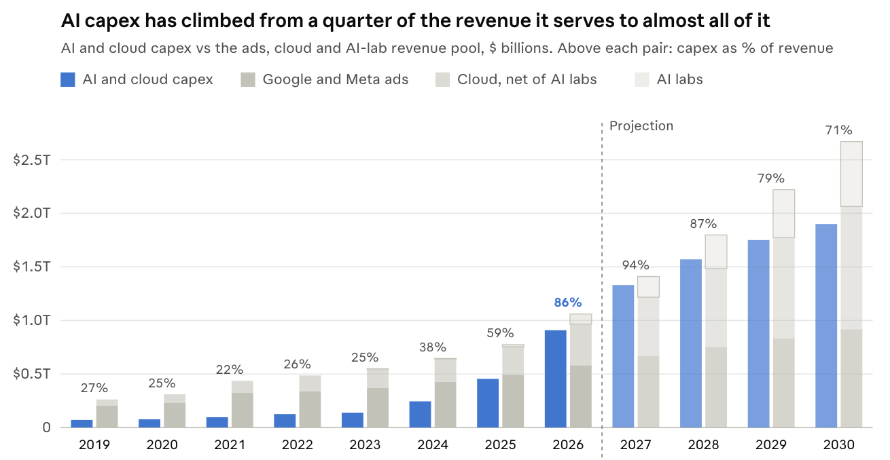

"Is AI a bubble?" may be the most asked question in finance this year. It rarely gets a straight answer, for two reasons. First, "bubble" means different things to different people: high stock prices, building more capacity than anyone will use, or funding it with too much debt. Second, as I argued in my previous post, you can never prove a bubble in real time—a massive capital build-out is only a bubble in hindsight if the future revenue fails to materialize.
A technology can also be real and still hurt its investors. Britain's railways in the 1840s and America's fiber-optic networks in the late 1990s changed their economies for good, yet much of the money that built them was lost when demand arrived more slowly than debt came due. So the useful question is not whether AI works—it clearly does. The question is whether the trillions being spent on it will earn their keep, and where fragility is building if growth slows or macro conditions tighten.
Prices alone tell only half the story: the Nasdaq sits roughly 30% above its 55-year trend—overvalued and vulnerable to a macro shock, but nowhere near the mania of 2000. Here I look under the hood, at the money going in and the money coming out. The capex and revenue pool figures come from a longer analysis I finished at the end of October 2026, built mostly from company filings, updated for major November developments including Nvidia's third-quarter earnings and Anthropic's stock-market debut. Every number, formula and source is documented in the companion Methods, Data, and Sources PDF.
Spending has outrun current revenue
Start with what the AI build-out is for. The chips and data centers that Microsoft, Alphabet, Amazon (AWS), Meta, Oracle and newer players such as CoreWeave, Nebius and xAI are buying serve three businesses: Google's and Meta's advertising (their ranking and recommendation systems run on the same AI hardware), cloud computing, and the AI labs such as OpenAI and Anthropic. Together that revenue pool comes to about $1.06 trillion in 2026.
Spending on AI and cloud infrastructure is on pace to reach about $910 billion this year—86 cents spent for every dollar of current revenue it serves. From 2019 to 2023, it was about 25 cents.

AI and cloud capital spending against the advertising, cloud and AI-lab revenue it serves; the label above each pair is spending as a share of revenue. Company filings for 2019–2025; 2026 from January–September results and guidance; 2027–2030 my base scenario, not a forecast.
Since 2022, spending has grown about 64% a year and revenue about 21%. In my base scenario, which follows company guidance and analyst estimates, spending peaks near 94% of revenue in 2027 before easing off.
A high ratio does not by itself prove overspending. Railways, power grids and early cloud build-outs all required heavy investment up front. What matters is whether the revenue that eventually shows up earns more than the capital costs.
Will the money earn its keep?
As a rough benchmark, equity investors expect a return of around 9% a year on this kind of long-term investment; below that, they would have been better off putting the money elsewhere. So the test is easy to state, even if the answer is still open: will the AI build-out earn more than 9%?
Looking back, it depends on how much credit AI gets. From 2022 to 2026, operating profit across advertising, cloud and the AI labs rose by about $202 billion. Credit all of that to the build-out, and it earns 13–27% on the money invested—comfortably above 9%. Some of that growth would have happened anyway; under tougher counterfactual assumptions about non-AI growth, returns can fall below 9%, and counting only standalone generative AI products (chatbots and coding assistants) yields roughly 2–6%. Still, backward-looking snapshots are inherently harsh on front-loaded infrastructure whose newest capacity only just came online.
Looking forward, the bar is rising. For all the equipment installed since 2019 to earn 9%, the combined revenue pool must grow at least 22% a year through 2030—roughly its 21% pace over the past four years, so well within reach if adoption keeps compounding. But the cushion is shrinking: today revenue covers what the equipment needs to earn about 2.5 times over; by 2030, in my base scenario, it covers it only about 1.1 times. Like a household whose income is growing nicely while its fixed payments grow faster, everything works as long as the raises keep coming.
The narrowest test is the starkest. Standalone generative AI customer revenue is tracking around $150–190 billion in 2026, against roughly $950 billion of AI-specific infrastructure spending this year alone. Each dollar of AI capacity earns roughly 5–7 cents a year before depreciation, against the roughly 21 cents it needs to pay back its chips and buildings and earn 9%. Much of that capacity is still ramping up—so the gap is not proof of overbuilding today, but the hurdle future revenue must clear.
From cash to credit at the margin
Until recently, one of the strongest arguments against systemic fragility in AI was that Big Tech paid for the build-out out of pocket rather than borrowing like the telecom firms of 2000.
That began to shift at the margin in 2026. In 2024, the five biggest spenders generated $478 billion of operating cash flow and spent $239 billion on equipment. By the third quarter of 2026, their combined quarterly spending of about $230 billion edged past the roughly $199 billion of cash their businesses brought in. Alphabet, Meta and Amazon all posted negative free cash flow for the quarter, though Microsoft remained a clear exception with roughly $18.6 billion in positive free cash flow. Amazon, Alphabet, Meta and Oracle issued more than $228 billion in bonds by mid-October—more than double the year before—with further large deals, including Oracle's $20 billion debt-and-equity raise, following in November.
Big Tech still funds most of its build-out internally and retains fortress balance sheets. What changes with borrowing is who carries the risk: when a company spends its own cash and a bet disappoints, shareholders earn less; when it borrows, bondholders, private-credit funds and banks are exposed too. Some commitments sit off corporate balance sheets altogether: Meta's Hyperion data center in Louisiana, for instance, uses a $27 billion financing vehicle 80% owned and financed by outside investors led by Blue Owl (the campus itself has since grown past $50 billion).
The big four hyperscalers can comfortably carry this debt. The real strain is at the leveraged edges—credit fragility that can produce violent drawdowns even when underlying demand is real. Oracle, the most stretched of the large spenders, had fallen roughly 70% from its September 2025 peak by late November; S&P downgraded its debt to BBB- (one notch above junk) in July, and the cost of insuring its debt hit a record 356 basis points. CoreWeave, which rents out AI chips on heavy debt, is down roughly 75–80% from its June 2025 peak, and on November 25 its credit default swaps hit a record 1,314 basis points—implying roughly a 65–70% chance of default within five years. Both borrowed heavily to build capacity tied closely to cash-burning AI workloads.
Why this does not look like 2000
On core fundamentals, the bulls still hold the stronger hand. In a classic overbuilding bust, capacity sits idle while prices collapse: in 2002, by one widely cited estimate, only about 2.7% of America's fiber was actually lit.
Today, the opposite is true. SK hynix says its memory chip capacity is effectively sold out through 2029 under long-term agreements (though rival expansions could eventually ease the bottleneck). Microsoft trimmed its 2026 spending outlook slightly because third-party GPU deliveries were delayed, not because demand softened. Rental prices for older Nvidia H100 chips remain well above their late-2025 lows. And AI-lab revenue is compounding at a pace with no precedent at this scale: OpenAI and Anthropic together now run at roughly $120–130 billion in annualized revenue (measured differently at each: Anthropic multiplies its trailing 28 days by 13, reaching roughly $81 billion as of October 31, while OpenAI's figure is net), up from under $10 billion at the start of 2025.
Public-leader valuations also look nothing like 2000. The largest hyperscalers trade at roughly 15–25 times next year's expected earnings. Nvidia—often called the Cisco of this cycle—just reported $115.8 billion in quarterly revenue (up 103% year-over-year) and, after November's pullback, trades at roughly 16–18 times trailing earnings. At the dot-com peak, Cisco traded at about 196.
Even the sharpest skeptics' accounting critiques look manageable at the core. Michael Burry argues that tech companies flatter profits by depreciating AI hardware over five or six years when rapid chip cycles may limit useful lives to three or four (Amazon has already shortened part of its server schedule from six years back to five). Redoing the math at four years knocks roughly 9–10% off hyperscaler earnings—a real headwind, not a collapse. For thinly capitalized, debt-heavy GPU-rental firms, however, the same adjustment can erase their equity.
The circle at the center
The main structural risk the bulls tend to downplay is circular financing: suppliers increasingly fund their own customers. Nvidia has invested roughly $50 billion across AI labs that ultimately buy its chips through cloud providers. Two of the three largest investors in OpenAI's early-2026 funding round—Amazon and Nvidia—are also its key suppliers. Anthropic's November IPO likewise included a $26 billion concurrent private placement from major hardware and cloud partners led by Google and Nvidia. Meanwhile, about 40% of the $2–2.5 trillion in future cloud contracts reported by the four major cloud providers is owed by just two customers: OpenAI and Anthropic.
Look closely at those two labs, and the picture is mixed rather than uniformly bearish. Anthropic posted a $974 million GAAP operating profit in the second quarter of 2026 before swinging to a $567 million operating loss in the third quarter after absorbing $5 billion in short-term spot compute and $2 billion in non-cash equity-matching charges, while disclosing roughly $895 billion in long-term compute commitments in its amended S-1. When Anthropic went public on Nasdaq (ANT) on November 19—raising $81.3 billion at $83 a share, valuing it near $1.5 trillion—it popped on day one before drifting back to $82.79 by November 25 as investors weighed explosive growth against those obligations. OpenAI, meanwhile, pushed its own IPO toward 2027; leaked internal projections reported by the Financial Times point to roughly $278 billion in cumulative negative free cash flow between 2026 and 2030, betting on revenue scaling toward $350 billion.
This loop holds as long as end-customer demand keeps growing fast enough to attract capital. It echoes the vendor-financing pattern of Lucent and Nortel in 1999, but with far stronger balance sheets behind the suppliers and far faster real customer revenue at the center.
A layered bet on future revenue
What we actually have in late 2026 is not a single bubble, but four distinct layers of risk:
- At the core, real demand that still exceeds supply, backed by profitable incumbents at reasonable earnings multiples.
- Around it, an unprecedented front-loaded spending cycle that will look prescient if revenue keeps compounding through 2030—and overbuilt only if it does not.
- At the edges, genuine credit and leverage fragility (in chip-rental firms, Oracle and off-balance-sheet project debt) already getting repriced because high debt leaves no room for delays or tighter rates.
- Underneath, a market heavily concentrated in mega-caps, meaning either an AI revenue miss or a macro shock could ripple well beyond tech.
Measured against the common meanings of "bubble":
| What people mean by "bubble" | Where AI stands in late 2026 |
|---|---|
| Debt that only a smooth boom can repay | Present at the edges: chip-rental firms, Oracle, project-finance debt—not the core hyperscalers |
| Building more than will earn its cost | Open question: no idle glut today, but the 2027–2030 payoff needs sustained fast revenue growth |
| Prices above what future profits justify | Uncertain: hyperscaler and Nvidia multiples look modest; lab valuations hinge on multi-year compounding |
| Buying mainly to sell higher to someone else | Mostly at the edges: late-stage private rounds and speculative AI plays, not the mega-cap core |
| Suppliers funding their own customers | Real structural risk: vendor equity stakes and ~40% backlog concentration amplify any slowdown |
| A story driving valuations more than results | Mixed: annualized revenue has surged past $120B at the top labs, though AGI stories still price in steep growth |
| Expectations running ahead of delivery | Mixed: software and coding adoption is already paying off; economy-wide productivity stats still lag |
| An economy leaning on one theme | Real macro vulnerability: the ten largest companies make up roughly 38% of the S&P 500 |
If the skeptics eventually win the argument, the historical parallel will not be tulips or Pets.com, where the underlying asset was worthless. It will be railways and fiber: real infrastructure where late-stage financiers overpaid for the timing even as society reaped the benefits. If the bulls win—if agentic workflows and enterprise adoption keep compounding at 25–30%+ a year—today's capex will look less like a bubble and more like the early build-out of electricity or cloud computing.
Two facts still separate today from 2000: the core spenders are among the most profitable businesses in history, and the capacity they have built is fully used. Both could be tested in 2027–29 as massive new supply comes online—especially if macro headwinds tighten credit at the same time.
What to watch
Three signposts will tell us which way this is heading:
- Spending plans for 2027, announced in January and February. Do hyperscalers keep accelerating capex with strained free cash flow—deepening their reliance on bonds and private credit—or pace outlays closer to internal cash generation?
- Revenue acceleration in 2027. With capex climbing toward ~94% of the revenue pool in 2027 in my base scenario, revenue needs to run well ahead of its 2022–26 pace of ~21%—ideally toward ~30%—so the larger capital base clears its hurdle even as growth moderates toward 2030. Stalling near 20% while spending surges leaves no margin for error.
- Anthropic's public-market endurance and OpenAI's path to an IPO. Anthropic's November debut proved public markets will fund an AI lab at historic scale, while its quick return to $83 shows investors scrutinizing ~$895 billion in compute commitments. How
ANTtrades over the coming quarters—and whether OpenAI smoothly reaches public markets in 2027—will decide whether capital keeps flowing smoothly through the loop.
If a sharp sell-off arrives—whether from disappointing AI revenue or a macro shock hitting an overvalued market—it will likely break first at the leveraged edges, not in the technology. Plenty of commentators will immediately declare that AI was a bubble all along. The more honest view today is simpler: heavy spending is not a bubble by itself, and only the next few years of revenue will tell us whether this bet paid off.
Definitions, calculations, sources and limits: Methods, Data, and Sources (PDF).
Comments